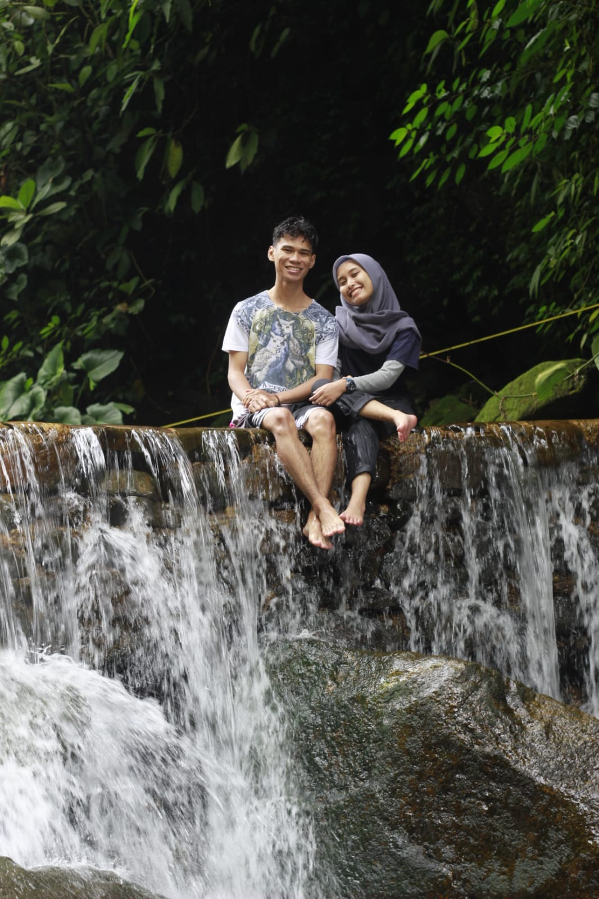
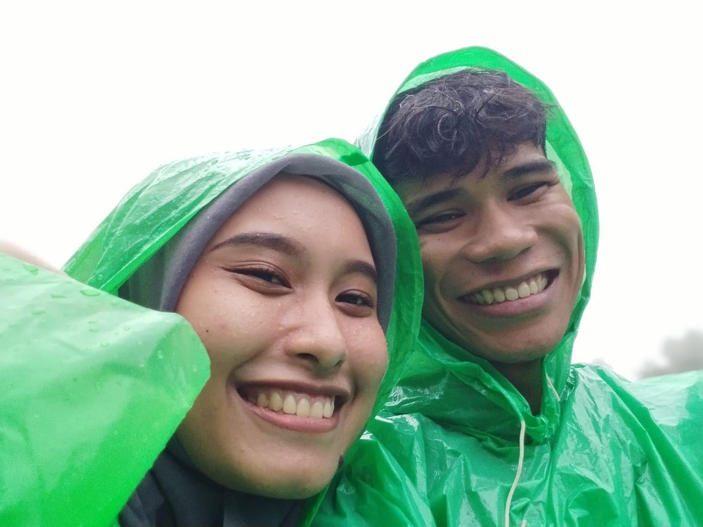
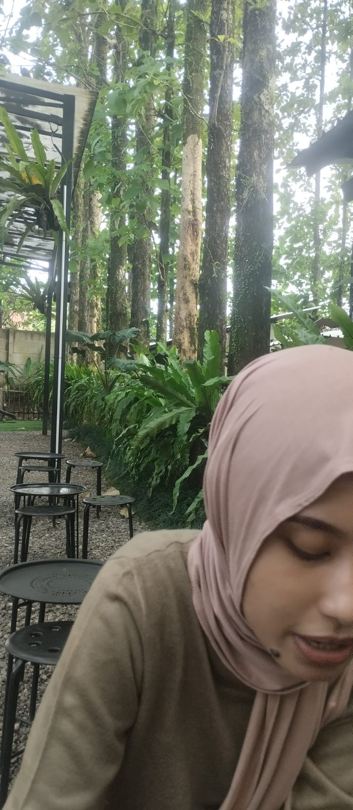
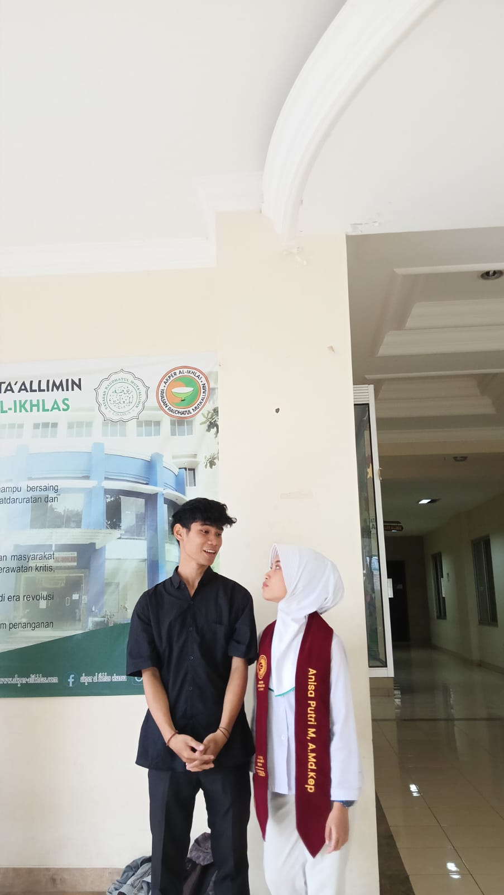

OUR MOMENTS
MOMEN SPESIAL

HANYA ADA KITA BERDUA
KENANGAN MANIS

TEMPAT YANG PALING AKU
VIDEO KENANGAN
VIDEO PERTAMA KITA
VIDEO KEDUA BERSAMA
GALERI LENGKAP

TEMPAT MAKAN FAVORIT AKU

TEMPAT DI MANA PUSINGNYA KELAR
VIDEO SPESIAL PENUTUP
HAPPY 1ST ANNIVERSARY & VALENTINE
❤️ 14 FEBRUARY 2026 ❤️